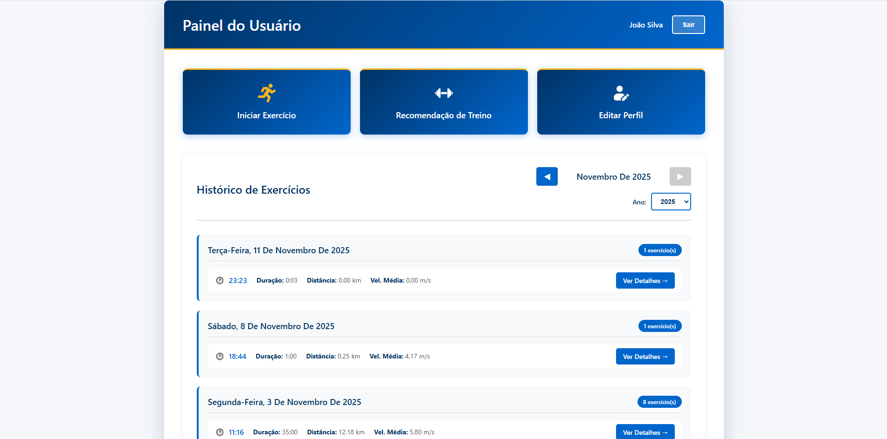
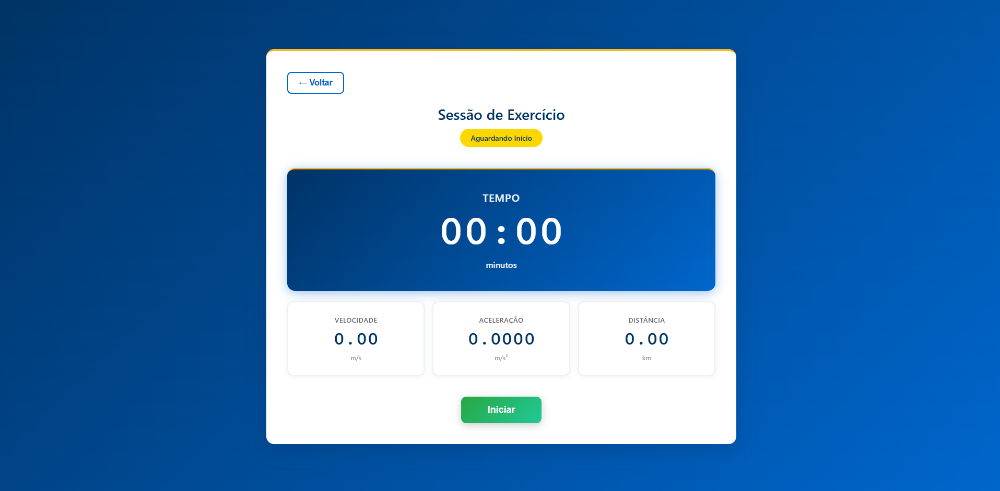
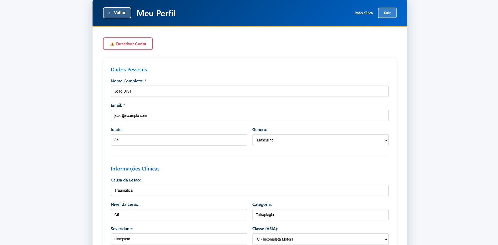
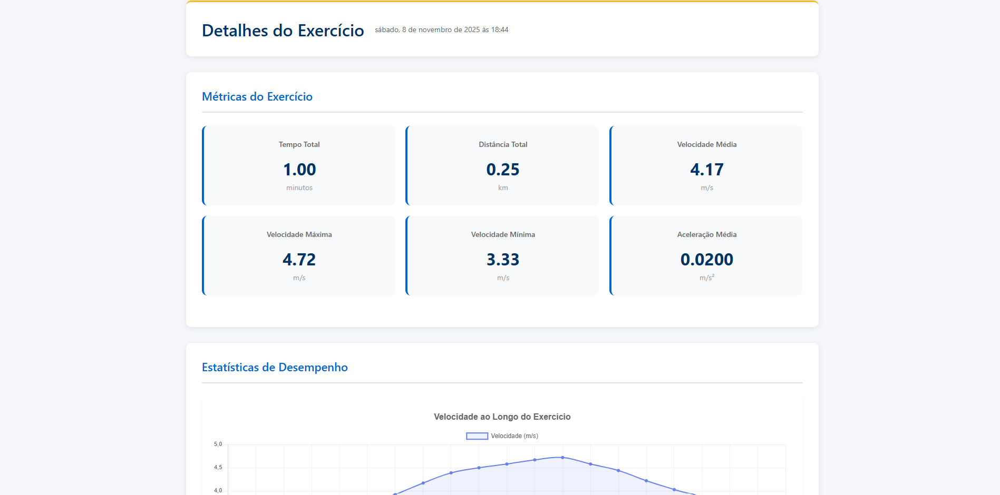
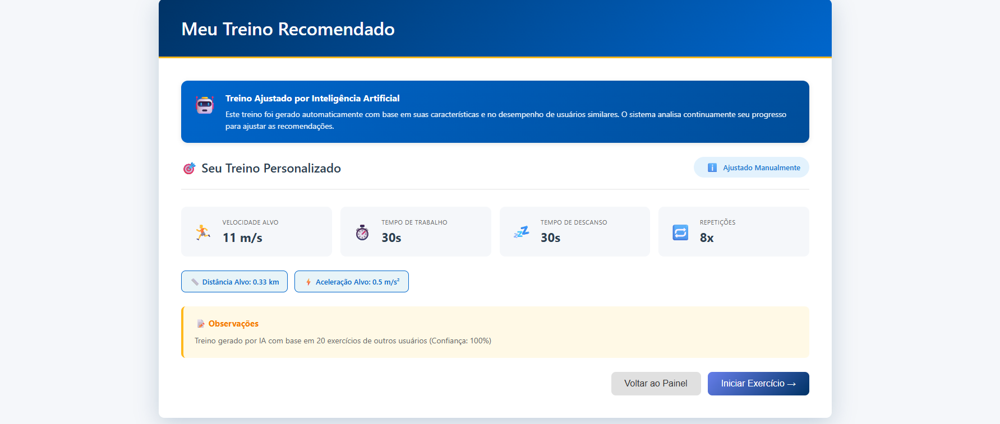

Como Usar a Plataforma
Este guia completo irá ajudá-lo a aproveitar ao máximo todas as funcionalidades da Plataforma LocoMove. Siga as instruções abaixo para começar a monitorar seus treinos.
1. Página Principal - Visão Geral
A página principal é o seu painel de controle, onde você visualiza todos os exercícios realizados no mês atual e acessa as principais funcionalidades.
Funcionalidades da Página Principal
Dados Mensais
Visualize todos os exercícios realizados no mês atual. Você pode alternar entre meses e anos para ver seu histórico completo.
Editar Perfil
Atualize seus dados cadastrais, informações pessoais e configurações da conta.
Iniciar Exercício
Comece um novo treino com monitoramento em tempo real de velocidade, aceleração e distância.
Recomendações
Acesse sugestões personalizadas de treinos HIIT baseadas em seu histórico e desempenho.

2. Iniciar e Realizar Exercício
Clique em "Iniciar Exercício"
Na página principal, selecione o botão "Iniciar Exercício" para começar uma nova sessão de treino.
Tela de Exercício
Você verá:
- Botão Iniciar: Para começar o treino
- Cronômetro: Marca o tempo total do exercício
- Velocidade atual: Atualizada em tempo real
- Aceleração atual: Atualizada em tempo real
- Distância percorrida: Calculada automaticamente
Contagem Regressiva
Ao clicar em "Iniciar", uma contagem regressiva de 5 segundos será exibida para você se preparar.
Durante o Treino
O sistema monitora continuamente seus dados. Você verá atualizações em tempo real de:
- Tempo decorrido
- Velocidade instantânea
- Aceleração instantânea
- Distância total percorrida
Importante: Todos os dados são salvos automaticamente durante o exercício.
Finalizar Exercício
Quando terminar, clique no botão "Parar". O sistema exibirá um resumo completo do seu treino.

Resumo do Exercício
Após finalizar, você verá:
⚡ Velocidade Máxima
Maior velocidade atingida durante o treino
🐢 Velocidade Mínima
Menor velocidade (excluindo os primeiros e últimos 30 segundos)
📊 Velocidade Média
Média calculada excluindo os primeiros 30s e últimos 15s
🚀 Aceleração Média
Média calculada excluindo os primeiros 30s e últimos 15s
⏱️ Tempo Total
Duração completa do exercício
📏 Distância Total
Distância percorrida durante toda a sessão
💡 Por que excluímos alguns segundos?
Os primeiros 30 segundos e os últimos 15 segundos são períodos de aquecimento e desaceleração, respectivamente. Excluí-los das médias fornece uma visão mais precisa do seu desempenho durante o esforço principal do exercício.
3. Ver e Editar Dados do Perfil
Na opção "Editar Perfil", você pode visualizar e atualizar suas informações cadastrais.
Informações Disponíveis
- Nome completo
- Data de nascimento
- Informações sobre a lesão medular (se aplicável)
- Configurações de conta
⚠️ Desativar Conta
Você também tem a opção de desativar sua conta. Esta ação pode ser reversível entrando em contato com o administrador do sistema.

4. Histórico de Exercícios e Estatísticas
Visualizar Exercícios Anteriores
Na página principal, clique em qualquer dia do calendário que contenha exercícios para ver os detalhes daquela sessão.
📅 Detalhes do Exercício
Visualize todas as métricas da sessão selecionada, incluindo velocidades, aceleração, tempo e distância.
📈 Gráficos de Desempenho
Acompanhe sua evolução através de gráficos interativos que mostram tendências ao longo do tempo.
🎯 Comparação de Períodos
Compare seu desempenho em diferentes períodos: último mês, últimos 6 meses ou último ano.
Métricas Disponíveis nos Gráficos
- Velocidade Média: Evolução da velocidade média ao longo do tempo
- Aceleração Média: Progresso na capacidade de aceleração
- Distância Percorrida: Total de distância em cada sessão
📊 Normalização de Dados
Como os exercícios podem ter durações diferentes, os gráficos são ajustados proporcionalmente para permitir comparações justas entre sessões.

5. Recomendações de Exercício
A plataforma utiliza algoritmos de Inteligência Artificial (K-Nearest Neighbors) para fornecer recomendações personalizadas de treinos HIIT.
Como Funcionam as Recomendações
Coleta de Dados
O sistema analisa seu histórico de exercícios, incluindo velocidades, aceleração e duração das sessões.
Análise de Desempenho
A IA identifica padrões no seu desempenho e compara com protocolos HIIT adequados para seu nível.
Recomendação Personalizada
Com base na análise, o sistema sugere um protocolo de treino específico para você.
⚠️ Primeira Utilização
Para receber recomendações precisas, é necessário ter realizado pelo menos um exercício completo. Isso permite que o sistema entenda seu nível atual de condicionamento.
Tipos de Protocolos HIIT
As recomendações podem incluir diferentes protocolos de treino, como:
- HIIT Iniciante: Intervalos mais longos de descanso
- HIIT Intermediário: Equilíbrio entre esforço e recuperação
- HIIT Avançado: Intervalos mais intensos com menor tempo de descanso

Requisitos do Sistema
Hardware Necessário
🔌 ESP8266
Microcontrolador com conexão Wi-Fi
📡 Sensor TCRT5000
Sensor óptico para detecção de rotações
♿ Ergômetro
Ergômetro de cadeira de rodas
📶 Wi-Fi
Conexão estável com a internet
Software e Navegadores
A plataforma é compatível com:
- Google Chrome (versão 90 ou superior)
- Mozilla Firefox (versão 88 ou superior)
- Safari (versão 14 ou superior)
- Microsoft Edge (versão 90 ou superior)
💡 Dica
Para melhor experiência, utilize um dispositivo com tela de pelo menos 10 polegadas e mantenha seu navegador sempre atualizado.
Dicas e Boas Práticas
🎯 Consistência
Realize exercícios regularmente para obter melhores recomendações e acompanhar sua evolução de forma precisa.
📱 Mantenha Conexão Estável
Certifique-se de que o ESP8266 está conectado à rede Wi-Fi antes de iniciar o exercício.
👨⚕️ Orientação Profissional
Sempre consulte um profissional de saúde ou educação física antes de iniciar novos protocolos de treino.
📊 Analise seus Dados
Revise regularmente suas estatísticas para identificar progressos e áreas que precisam de atenção.
Precisa de Ajuda?
Entre em Contato
Se você tiver dúvidas ou encontrar problemas ao usar a plataforma, nossa equipe está à disposição: ✉️ lauramayres@eng.ci.ufpb.br